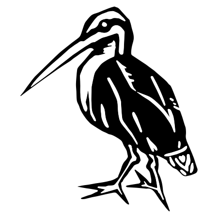

David Lougheed
 I am a software developer at the
Canadian Centre for Computational Genomics (C3G)
in Montréal. There, I am creating web portals for health and ‑omics data, and developing a tool to
better genotype short tandem DNA repeats using long-read sequencing data.
I am a software developer at the
Canadian Centre for Computational Genomics (C3G)
in Montréal. There, I am creating web portals for health and ‑omics data, and developing a tool to
better genotype short tandem DNA repeats using long-read sequencing data.
I also occasionally work at the Queen's University Biological Station, where I act as a field/network technician, helping to maintain networking infrastructure and a network of satellite-linked climate stations.
I have a B.Sc. in Computer Science and Biology (graduated 2019 with First Class Honours), and an M.Sc. in Human Genetics (granted 2023); both from McGill University. My Master's thesis was supervised by Professor Guillaume Bourque, and is titled “Using High-Fidelity Long-Read Sequencing to Better Detect and Understand Short Tandem Repeat Variation in Humans.”
Publications
-
Insights on macrosynteny, ′rebel′ genes, and a new sex-linked region in anurans from comparative
genomics and a new chromosome-level genome for the western chorus frog
(2024)
Ying Chen, David R Lougheed, Zhengxin Sun, Jeffrey Ethier, Vance L Trudeau, Stephen C Lougheed. BioRxiv preprint. DOI: 10.1101/2024.10.27.620512
-
Enhancing metabarcoding of freshwater biotic communities: a new online tool for primer selection and
exploring data from 14 primer pairs
(2024)
Orianne Tournayre, Haolun Tian, David R Lougheed, Matthew JS Windle, Sheldon Lambert, Jennipher Carter, Zhengxin Sun, Jeff Ridal, Yuxiang Wang, Brian F Cumming, Shelley E Arnott, Stephen C Lougheed. Environmental DNA. DOI: 10.1002/edn3.590
-
EpiVar Browser: advanced exploration of epigenomics data under controlled access (2024)
David R Lougheed, Hanshi Liu, Katherine A Aracena, Romain Grégoire, Alain Pacis, Tomi Pastinen, Luis B Barreiro, Yann Joly, David Bujold, Guillaume Bourque. Bioinformatics. DOI: 10.1093/bioinformatics/btae136
-
Epigenetic variation impacts individual differences in the transcriptional
response to influenza infection (2024)
Katherine A Aracena, Yen-Lung Lin, Kaixuan Luo, Alain Pacis, Saideep Gona, Zepeng Mu, Vania Yotova, Renata Sindeaux, Albena Pramatarova, Marie-Michelle Simon, Xun Chen, Cristian Groza, David Lougheed, Romain Grégoire, David Brownlee, Yang Li, Xin He, David Bujold, Tomi Pastinen, Guillaume Bourque, Luis B Barreiro. Nature Genetics. DOI: 10.1038/s41588-024-01668-z
-
baRcodeR: An open‐source R package for sample labelling (2020)
Yihan Wu, David R Lougheed, Stephen C Lougheed, Kristy Moniz, Virginia K Walker, Robert I Colautti. Methods in Ecology and Evolution. DOI: 10.1111/2041-210X.13405
-
Genome-wide microhomologies enable precise template-free editing of biologically
relevant deletion mutations (2019)
Janin Grajcarek, Jean Monlong, Yoko Nishinaka-Arai, Michiko Nakamura, Miki Nagai, Shiori Matsuo, David Lougheed, Hidetoshi Sakurai, Megumu K. Saito, Guillaume Bourque & Knut Woltjen. Nature Communications. DOI: 10.1038/s41467-019-12829-8
Software & Projects
-
SNIPe
SNIPe is a web tool for optimally choosing environmental DNA (eDNA) primer pairs to identify a set of taxa. Part of a publication by Tournayre et al. (2024).
-
STRkit
STRkit is a short tandem repeat (STR) genotyper for long read sequencing data such as PacBio HiFi. STRkit was created as part of my Master's degree in Human Genetics at McGill.

-
EpiVar Browser
A browser for exploring quantitative trait loci and their associations with genotype and ancestry. Published as a Bioinformatics application note: Lougheed et al. (2024), and as part of a publication by Aracena et al. (2024).
-
Bento
A platform for storing, analyzing, and visualizing genomic and epigenomic data, created while working at the Canadian Centre for Computational Genomics (C3G).
-
David's Trail Guide System
A set of three components for creating mobile trail guide applications: a content server with a corresponding front-end and a white-label Expo application. I used this to build the latest version of the Elbow Lake Trail Guide.

-
MHCut Browser (2019)
A browser for microhomologies at variant CRISPR/Cas9 cut sites. Part of a publication by Grajcarek et al. (2019).
-
Elbow Lake Trail Guide
An interactive trail guide app available on Android and iOS.
-
Canadian Field Stations (2014-2016; 2024)
A compendium of field stations across Canada which I assist in maintaining.